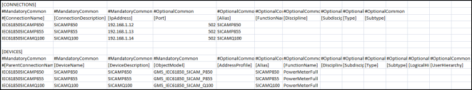

IEC61850 Power Devices
The management platform supports the integration of IEC61850 Power Devices.
This section enables you to understand the components, such as the list of object models and meters/devices associated with the EnergyAndPower_Device_IEC61850_Meters_HQ_2 library.
For information on naming conventions for names, paths, and other elements, see Common Rules for Names and Paths in the Management System and Naming Rules for Subsystem Elements in Naming Conventions.
CSV Data for IEC61850 Power Meters
In order to create instances of the IEC61850 power meters, you must create the engineering data in the form of a comma-separated value (CSV) file. A CSV file contains data in which values are represented as text and separated using a separator such as comma (,). This format can be easily edited in simple text editors such as Wordpad or Notepad. More elaborate editing can be done using advanced word processing tools, like Excel. The Importer can parse CSV files which only use the comma (,) as the separator.
The CSV file must consist of the following components:
- Name of the subsystem to which the IEC61850 driver is associated with
- Current version of the csv file
- Name and details of the connections where you want to create the devices
- Names and details of devices
For details on the number of fields for the connection and device entries in the CSV file, see Format of the CSV Data in Librarian Configuration Workspace.
A template of the CSV file (IEC61850_template_3.1_Instances.csv) is present at [Installation Drive]:\[Installation Folder]\GMSMainProject\profiles\IEC61850DataTemplate. You can create a copy of this file at any location on your hard drive and thereafter modify the information present in the [CONNECTIONS] and [DEVICES] sections as per the device configuration.
The following example shows a sample CSV file that is used to create instances of devices.

Libraries
When you install the management platform and select the IEC61850 Power Devices 2 extension, from the Energy and Power extension suite, the EnergyAndPower_Device_IEC61850_Meters_HQ_2 libraryis installed on your system.
The following table lists object models for IEC61850 Power Devices.
Device | Object Model | Short Name | Function Name | Address Profile | |
Sicam P850 | GMS_IEC61850_SICAM_P850 | SICAM_P850 | PowerMeterFull | Full | |
| 1PhaseWithoutHar | ||||
1PhaseWithHar | |||||
3Phase3Wires | |||||
3Phase4Wires | |||||
Sicam P855 | GMS_IEC61850_SICAM_P855 | SICAM_P855 | PowerMeterFull | Full | |
| 1PhaseWithoutHar | ||||
1PhaseWithHar | |||||
3Phase3Wires | |||||
3Phase3WiresWith | |||||
3Phase4Wires | |||||
Sicam Q100 | GMS_IEC61850_SICAM_Q100 | SICAM_Q100 | PowerMeterFull | Full | |
| 1Phase | ||||
3Phase3Wires | |||||
3Phase4Wires | |||||
Sicam Q100_V2XX | GMS_IEC61850_SICAM_Q100_V2XX | SICAM_Q100_V2XX NOTE: Applicable only when the firmware version installed is V2.4 and above. | PowerMeterFull | Full | |
| 1Phase_V2xx Base10cycleOr12cycle | ||||
3Phase3Wires_Balanced_V2xx Base10cycleOr12cycle | |||||
3Phase3Wires Unbalanced(2I)_V2xx Base10cycleOr12cycle | |||||
3Phase3Wires Unbalanced(3I)_V2xx Base10cycleOr12cycle | |||||
3Phase4Wires Balanced_V2xx Base10cycleOr12cycle | |||||
3Phase4Wires Unbalanced(PH_N)_V2xx Base10cycleOr12cycle | |||||
3Phase4Wires Unbalanced(PH_PH)_V2xx Base10cycleOr12cycle | |||||
1Phase_V2xx Aggregation150cycleOr180cycle | |||||
3Phase3Wires_Balanced_V2xx Aggregation150cycleOr180cycle | |||||
3Phase3Wires Unbalanced(2I)_V2xx Aggregation150cycleOr180cycle | |||||
3Phase3Wires Unbalanced(3I)_V2xx Aggregation150cycleOr180cycle | |||||
3Phase4Wires Balanced_V2xx Aggregation150cycleOr180cycle | |||||
3Phase4Wires Unbalanced(PH_N)_V2xx Aggregation150cycleOr180cycle | |||||
3Phase4Wires Unbalanced(PH_PH)_V2xx Aggregation150cycleOr180cycle | |||||
Sicam Q200 | GMS_IEC61850_SICAM_Q200 | SICAM_Q200 NOTE: Applicable only when the firmware version installed is V2.6 and above. | PowerMeterFull | Full | |
| 1Phase Base10cycleOr12cycle | ||||
3Phase3Wires_Balanced Base10cycleOr12cycle | |||||
3Phase3Wires_Unbalanced(2I) Base10cycleOr12cycle | |||||
3Phase3Wires_Unbalanced(3I) Base10cycleOr12cycle | |||||
3Phase4Wires_Balanced Base10cycleOr12cycle | |||||
3Phase4Wires_Unbalanced Base10cycleOr12cycle | |||||
1Phase Aggregation150cycleOr180cycle | |||||
3Phase3Wires Aggregation150cycleOr180cycle | |||||
3Phase3Wires_Unbalanced(2I) Aggregation150cycleOr180cycle | |||||
3Phase3Wires_Unbalanced(3I) Aggregation150cycleOr180cycle | |||||
3Phase4Wires_Balanced Aggregation150cycleOr180cycle | |||||
3Phase4Wires_Unbalanced Aggregation150cycleOr180cycle | |||||
This section provides background information on IEC61850 Power Devices 2 of Desigo CC. For related procedures, see the step-by-step section.